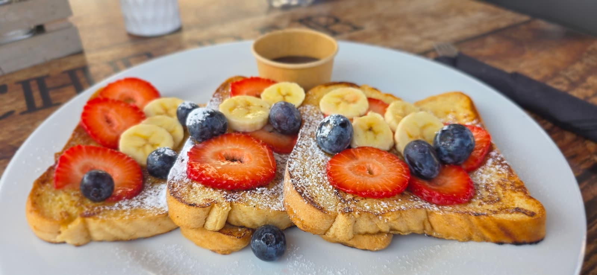

Somewhere between a fluffy American pancake and a thin French crepe, there's a Dutch pancake — and once you've had one, the others don't quite compare.
In Aruba, Dutch pancakes aren't just a menu item. They're a piece of the island's history, a direct connection to the Netherlands, and one of the most popular breakfast choices for visitors and locals alike. Here's the full story.
What Is a Dutch Pancake?
A Dutch pancake — pannenkoek in Dutch — is a large, thin pancake, typically around 12 inches across. It's made with a simple batter of flour, eggs, and milk, cooked on a flat pan until golden, with toppings either folded in during cooking or layered on top.
The texture is what sets it apart. It's thinner and crispier around the edges than an American pancake, but thicker and more substantial than a French crepe. It holds up to heavy toppings without falling apart, and it has a slightly buttery, golden flavor that makes it feel like more than just a vehicle for syrup.
Here's how they compare:
American Pancake
Small, thick & fluffy. Stacked. Breakfast only. Baking powder for lift. Drowned in maple syrup.
French Crêpe
Very thin & delicate. Folded or rolled. Sweet or savory. High milk ratio. Tears easily.
Dutch Pannenkoek
Large, thin & sturdy. Flat with toppings. Sweet or savory. Crispy edges. A full meal.
In the Netherlands, Dutch pancakes are traditionally a dinner food, not a breakfast food. Families go to pannenkoekenhuizen (pancake houses) for dinner, and kids' birthday parties are commonly held there. But in Aruba and the Caribbean, they've become a beloved breakfast and brunch staple — and honestly, they might be even better in the morning with a good cup of coffee.
The History: From Holland to Aruba
The Dutch pancake has been around for centuries. When buckwheat cultivation reached the Netherlands in the 1200s, cooks started making flatbreads with the grain. By the 1500s, eggs and milk were added to the batter, and the pannenkoek as we know it took shape. The Dutch painter Pieter Aertsen even depicted a pancake baker at work in the 16th century — that's how embedded the dish already was in everyday life.
During the Dutch Golden Age in the 1600s, access to sugar, spices, and imported ingredients made pancakes even more popular. They were cheap, filling, and endlessly adaptable — you could make them sweet or savory, simple or indulgent.
So how did they end up in Aruba? The Dutch arrived in Aruba in 1636 and governed the island for centuries. Today, Aruba remains an autonomous country within the Kingdom of the Netherlands. Dutch is still an official language, Dutch surnames are everywhere, and Dutch food traditions — pannenkoeken, poffertjes, bitterballen — came with the colonial settlers and never left.
The pancake made the crossing and found a new home in the Caribbean sun. And somehow, eating a Dutch pancake on a warm Aruba morning, with trade winds blowing and a beach day ahead, feels exactly right.

Dutch Pancakes at Che Bar
At Che Bar in Palm Beach, we serve Dutch pancakes every morning with eight different toppings — four sweet, two savory, and two that sit somewhere in between. They're made fresh, cooked to order, and big enough that one is a full breakfast.
Sweet
Berries & Whipped Cream
Fresh strawberries and blueberries topped with whipped cream. The crowd favorite.
Banana Dulce de Leche
Sliced bananas with Argentine dulce de leche. Sweet, caramel-y, and a nod to our Argentine roots.
S'Mores
Crushed graham crackers and marshmallows, topped with chocolate. A vacation indulgence.
Apple Pie
Sliced apples and raisins cooked inside the pancake, topped with cinnamon. The most traditional Dutch choice.
Savory
Bacon & Apple
Bacon strips and sliced apples cooked right into the pancake. Sweet meets salty.
Farmer's Market
Bacon, ham, onions, mushrooms, and melted Gouda cheese. The most Dutch thing on the menu.
Sweet & Savory
Brie, Walnuts & Honey
Walnuts cooked inside, topped with creamy Brie and honey. Sophisticated and surprising.
Peanut Butter & Banana
Sliced banana, peanut butter, and honey on a warm pancake. Filling and satisfying.
A Dutch Tradition, an Aruba Breakfast
There's something special about eating a food that has 400 years of history behind it, sitting in the Caribbean morning sun with a coffee in hand. The Dutch pancake didn't just survive the journey from Holland to Aruba — it thrived. It became part of the island's identity, part of the breakfast culture, part of what makes this place feel both familiar and totally unique.
Whether you order one sweet or savory, with coffee or a mimosa, at Che Bar or anywhere else on the island — make sure you try a Dutch pancake at least once during your trip. It's one of those Aruba experiences that belongs on every visitor's list.
8 toppings — sweet, savory, and in between
Daily, 7:30 AM – 3:00 PM
Paseo Herencia Mall, Palm Beach, Aruba
Walking distance from all high-rise hotels